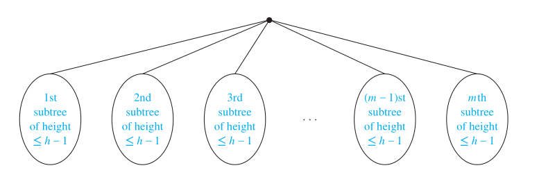

递归树
M叉平衡树之高贯穿算法分析。正因其精妙的性质，算法复杂度才出现对数。
假设我们有一个递归函数，其函数体中恒有 $M$ 处递归调用，且栈深有限。若以时间为轴，函数栈指针所在函数为状态，则沿着时间轴积累函数栈最高的情况，递归函数的时序轨迹会形成一颗平衡满M叉树。
事实上，函数递归通常伴随着剪枝，递归树不总是平衡的。但只要是树结构，我们都能估计或精算其高度。
M叉树
叶子的数量
-
命题：高为 $H$ 的M叉树最多有 $M^{H}$ 个叶子。
-
证明：
思路是对高度进行数学归纳。
首先来看高为 $1$ 的情况：树只有根，以及至多 $M$ 片叶子。故得基底步骤：高为 $1$ 的M叉树最多有 $M^{1} = M$ 片叶子。
归纳假设：高为 $H$ 的M叉树最多有 $M^{H}$ 片叶子。
设T为满足归纳假设的树，则T的叶子通常也是其子树的叶子，而子树通过分别删减它们的根与T根之间的边产生。

每棵子树的高都不大于 $H - 1$，根据归纳假设，每棵最多有 $M^{H-1}$ 片叶子。
因为最多有 $M$ 棵子树，且每棵最多有 $M^{H-1}$ 片叶子，所以T最多有 $M \cdot M^{H-1} = M^{H}$ 片叶子。
树的高度
-
命题：
-
若一颗M叉树有 $L$ 片叶子，则其高 $H \geq \lceil \log_{M}{L} \rceil$ ；
-
若M叉树为满且平衡，则其高 $H = \lceil \log_{M}{L} \rceil$ 。
-
-
证明：
已知 $L \leq M^{H}$ ，对不等式两侧取对数可得 $\log_{M}{L} \leq H$ ，因为 $H$ 为整数，所以 $H \geq \lceil \log_{M}{L} \rceil$ 。
对于平衡满M叉树，每片叶子都在第 $H - 1$ 或 $H$ 层。高为 $H$ 的树，第 $H$ 层至少有一片叶子，这意味着平衡满二叉树的叶子数必定多于 $M^{H-1}$ ，即 $M^{H-1} < L \leq M^{H}$ 。对不等式两侧取对数，可得 $H -1 < log_{M}{L} \leq H$ 。因此 $H = \lceil \log_{M}{L} \rceil$ 。